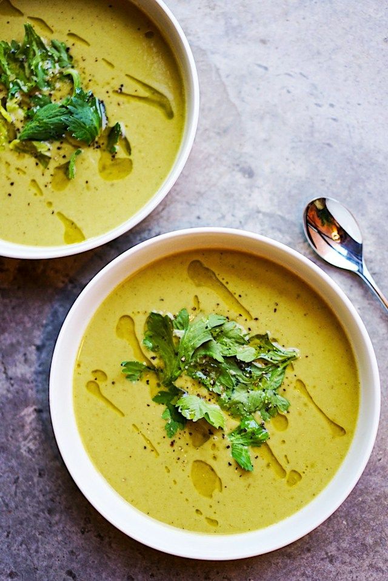

Broccoli Soup

Photo by Megan Bucknall on Unsplash
Description
This creamy broccoli soup is refreshing and packed full of important nutrients.
Ingredients
- 1 cup raw cashews
- 1 onion
- 1/4 tsp ground black pepper
- 4 cups of chopped broccoli
- 2 large potatoes
- 5 cups of vegetable broth
Steps
- Mix cashews and 1 cup vegetable broth in a blender until smooth
- Pour the vegetable broth into a large broth and add the potatoes
- Cover and cook until potatoes are tender
- Add cashew mixture and bring to a simmer
- Transfer to bowl and blend until the texture that suits you
Home